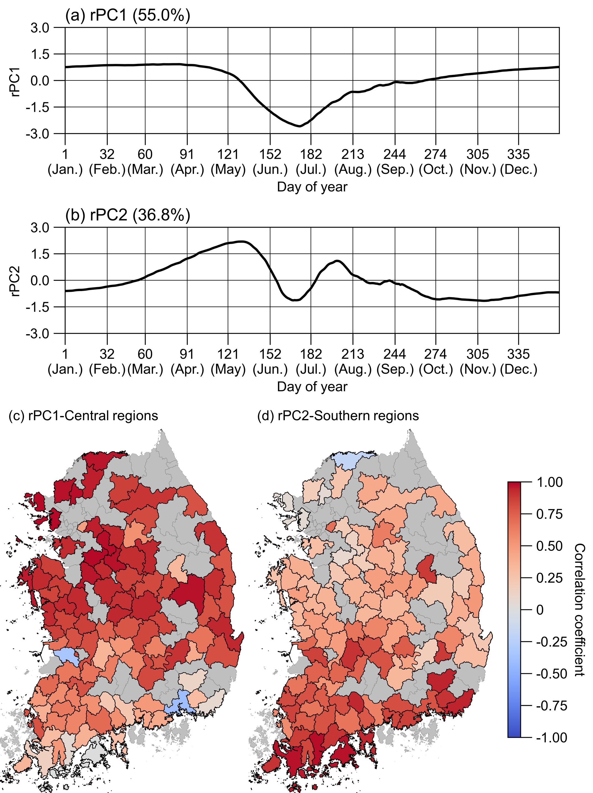

Two dominant modes of daily water storage volume across 3,300+ Korean agricultural reservoirs, separating central from southern regional regimes.
Big-data analytics on a national reservoir network
I apply rotated PCA and time-series decomposition to multi-decadal records of ~3,300 agricultural reservoirs across South Korea, extracting the dominant spatiotemporal modes of water storage, total organic carbon, and agricultural water use. The same framework exposes how adaptive rice-transplanting schedules are shifting under a warming climate — revealing emerging hydroclimatic vulnerability invisible in any single-station view.
Lee & Kam, Water Research (2024) · Lee, Nam & Kam, Agricultural Water Management (in review)